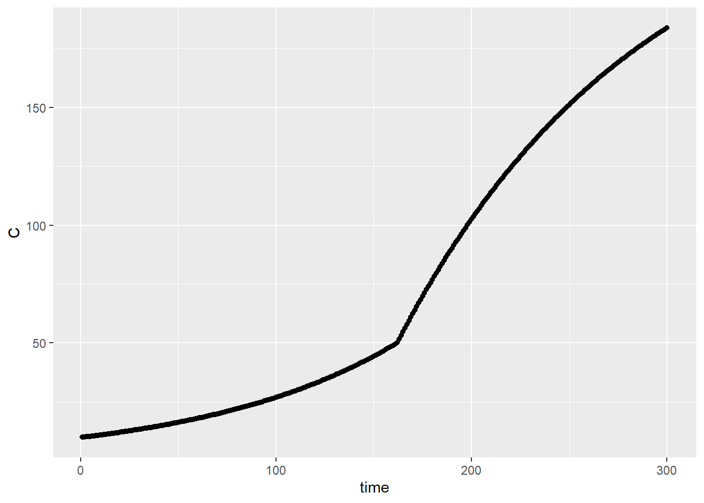
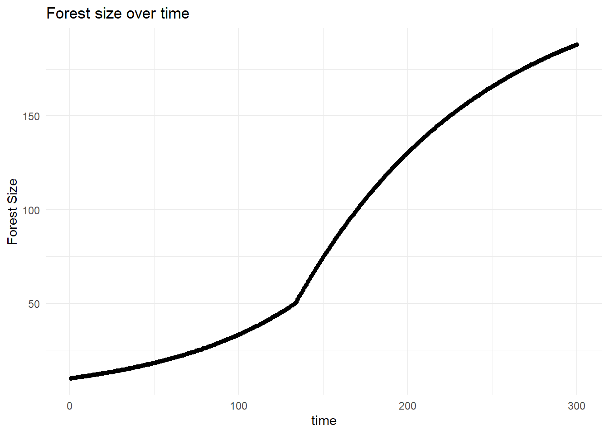

library(tidyverse)
library(deSolve)
library(sensitivity)
library(here)Forest Growth Model
Task
Implement the model in R as a differential equation
Run the model for 300 years (using the ODE solver) starting with an initial forest size of 10 kg/C and the following parameters
- canopy closure threshold of 50 kgC
- K = 250 kg C
- r = 0.01
- g = 2 kg/year
Graph the results
Run a sobol global sensitivity analysis that explores how the estimated maximum forest size (i.e. max of C 300 years, vaires with these parameters)
- pre canopy closure growth rate (r)
- post-canopy closure growth rate (g) canopy closure threshold and carrying capacity (K)
Assume that paramters are all normally distributed with means as given above and std deviation of 10% of mean value
Graph the results of the sensitivity analysis as a box plot of max forest size and record the two Sobol Indices (S and T)
In 2-3 sentences, discuss what the results mean. How do the parameters influence climate change.
Load libraries
1. Implement model
Model was created in the forest_growth.R file.
2. Run the model with the parameters above
source(here("R", "forest_growth.R"))
# We know initial Forest size C
Cinitial <- 10
simtimes <- seq(from = 1, to = 300)
parms <- list(r = 0.01, K = 250, g = 2, thresh = 50)
results <- ode(y = Cinitial, times = simtimes, func = forest_growth, parms = parms)
colnames(results) <- c("time", "C")3. Graph the results
results <- as.data.frame(results)
ggplot(results, aes(time, C)) +
geom_point()
4. Run a sobol sensitivity analysis
We will vary the parameters, r, g, and K, assuming a normal distribution with a 10% standard deviation
# Set sample size
np <- 1000
# Generate normal distributions for parameters
K <- rnorm(mean = 250, sd = 25, n = np)
r <- rnorm(mean = 0.01, sd = 0.001, n = np)
g <- rnorm(mean = 2, sd = 0.2, n = np)
thresh <- 50
X1 <- cbind.data.frame(r = r, K = K, g = g, thresh = thresh)
# Generate second set of samples
K <- rnorm(mean = 250, sd = 25, n = np)
r <- rnorm(mean = 0.01, sd = 0.001, n = np)
g <- rnorm(mean = 2, sd = 0.2, n = np)
thresh <- 50
X2 <- cbind.data.frame(r = r, K = K, g = g, thresh = thresh)
# fix any negative values and they are not meaningful
X1 <- X1 %>% map_df(pmax, 0.0)
X2 <- X2 %>% map_df(pmax, 0.0)
# create our sobel object and get sets of parameters for running the model
sens_C <- sobolSalt(model = NULL, X1, X2, nboot = 300)
# View head
head(sens_C$X) [,1] [,2] [,3] [,4]
[1,] 0.012133437 226.8054 2.070994 50
[2,] 0.009795501 206.8967 1.792759 50
[3,] 0.010107429 247.4875 2.137343 50
[4,] 0.009784521 258.6209 2.273681 50
[5,] 0.010888273 302.8902 1.929996 50
[6,] 0.009236053 265.2939 2.410174 50# lets add names
colnames(sens_C$X) <- c("r", "K", "g", "thresh")
# View head
head(sens_C$X) r K g thresh
[1,] 0.012133437 226.8054 2.070994 50
[2,] 0.009795501 206.8967 1.792759 50
[3,] 0.010107429 247.4875 2.137343 50
[4,] 0.009784521 258.6209 2.273681 50
[5,] 0.010888273 302.8902 1.929996 50
[6,] 0.009236053 265.2939 2.410174 50# gets results for 200 years (evaluating every year)
simtimes <- seq(from = 1, to = 300)
parms <- list(r = sens_C$X[1,"r"], K = sens_C$X[1,"K"], g = sens_C$X[1,"g"], thresh = sens_C$X[1,"thresh"])
result <- ode(y = Cinitial, times = simtimes, func = forest_growth, parms = parms)
head(result) time 1
[1,] 1 10.00000
[2,] 2 10.12207
[3,] 3 10.24564
[4,] 4 10.37071
[5,] 5 10.49731
[6,] 6 10.62546colnames(result) <- c("time", "C")
# turn it into a data frame
result <- as.data.frame(result)
ggplot(result, aes(time, C)) +
geom_point() +
labs(x = "time",
y = "Forest Size",
title = "Forest size over time") +
theme_minimal()
This is still creating a graph for just one simulation as we indexed for the first row in our data. Let’s create a max size function and a wrapper function that can be used for all parameters.
Compute metrics and wrapper function
# Create max size function
max_c <- function(result){
max_c <- max(result$C)
return(list(max_c))
}
# Wrapper function
wrapper <- function(K, g, r, thresh, Cinitial, simtimes, forest_growth_func, max_c_func) {
parms <- list(r = r, K = K, g = g, thresh = thresh)
result <- ode(y = Cinitial, times = simtimes, func = forest_growth_func, parms = parms, method="euler")
colnames(result) <- c("time", "C")
# get metrics
metrics <- max_c_func(as.data.frame(result))
return(metrics)
}
# test
wrapper(
r = 0.01, K = 250, Cinitial = 10, simtimes = seq(from = 1, to = 300),
forest_growth_func = forest_growth, max_c_func = max_c, g = 2, thresh = 50
)[[1]]
[1] 183.49485. Graph the results
Run the wrapper for all parameters and look at results
# now use pmap as we did before
allresults <- as.data.frame(sens_C$X) %>%
pmap(wrapper, Cinitial = Cinitial,
simtimes = simtimes,
forest_growth_func = forest_growth,
max_c_func = max_c)
# extract out results from pmap into a data frame
allres <- allresults %>% map_dfr(~ tibble(max_c = .x[[1]]))
# create boxplots
tmp <- allres %>% pivot_longer(cols = everything(), names_to = "max_forest", values_to = "value")
ggplot(tmp, aes(max_forest, value)) +
geom_boxplot() +
labs(title = "Max Forest Size Sensitivity Analysis",
y = "Max Forest Size (C)") +
scale_y_continuous() +
theme_minimal()
Compute the sobol indicies for each metric
# sobol can only handle one output at a time - so we will need to do them separately
sens_C_maxsize <- sensitivity::tell(sens_C, allres$max_c)
# first-order indices (main effect without co-variance)
rownames(sens_C_maxsize$S) <- c("r", "K", "g", "thresh")
sens_C_maxsize$S original bias std. error min. c.i. max. c.i.
r 0.3557752177 -1.237049e-03 0.03490952 0.28777476 0.42880560
K 0.3622190941 -2.056946e-03 0.02942830 0.30700574 0.42271154
g 0.2545606659 2.820973e-05 0.02972023 0.19925447 0.31652119
thresh -0.0005256611 -8.979388e-04 0.03247352 -0.07174993 0.06326707# total sensitivity index -note that this partitions the output variance
rownames(sens_C_maxsize$T) <- c("r", "K", "g", "thresh")
sens_C_maxsize$T original bias std. error min. c.i. max. c.i.
r 3.891452e-01 9.613750e-04 2.257960e-02 3.431803e-01 4.316025e-01
K 3.673200e-01 1.228113e-03 2.256348e-02 3.209654e-01 4.081376e-01
g 2.368221e-01 7.719522e-04 1.410365e-02 2.056615e-01 2.651643e-01
thresh 1.001421e-13 -7.080669e-14 1.761259e-13 -1.868611e-13 5.215030e-136. Conclusion
From the sensitivity analysis, we see that r (exponential growth rate) and K (carrying capacity) have the most influence on max forest size. Climate change can have a direct impact on both growth rates. For example, increases in drought may cause a decrease in growth rate due to less water availability.